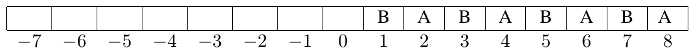

ACM-ICPC World Finals 2014 · Problem A
An airline has two flights leaving at about the same time from ICPCity, one to city B and one to city A. The airline also has n counters where passengers check their baggage. At each counter there is a pair of identical baggage bins, one for city B and one for city A.
Just before the flights depart, each pair of baggage bins is moved by a motorized cart to a sorting area. The cart always moves two bins at a time, one for city B and one for city A. After all the bins have been moved, they line up in the sorting area like this:
B A B A B A ... B A
That is, there are 2n baggage bins in a row, starting with a bin for city B, then one for city A, and so forth. The task now is to reorder them so all the baggage bins for city A precede the baggage bins for city B. Then the bins can be loaded on the appropriate aircraft.
The reordering is done by moving pairs of adjacent baggage bins (not necessarily B then A), again via the motorized cart. For proper balance, the cart must always carry two bins, never just one. A pair of bins must always be moved to an empty space that is at least two bins wide. On the left of the first bin are some empty spaces that can be used as needed during the reordering.
When the reordering process begins, the bin locations are numbered from 1 (initially containing the leftmost B baggage bin) to 2n (initially containing the rightmost A baggage bin). There are 2n initially empty spaces to the left of the bins, numbered from 0 to −2n + 1, as shown in Figure A.1 for the case n = 4.

Given n, find a shortest sequence of moves that will reorder the bins so that all the A bins are to the left of all the B bins. At the end of the process, it is possible that the leftmost A bin is at some location other than 1, but the bins must be adjacent in a sequence of 2n locations.
The input consists of a single test case, which consists of the integer n (3 ≤ n ≤ 100).
Display a shortest sequence of moves that will correctly reorder the bins. Each move is of the form “f to t”, where f and t are integers representing the movement of the bins in locations f and f + 1 to locations t and t + 1. If multiple solutions are possible, display any one of them.
5
8 to -1 3 to 8 6 to 3 0 to 6 9 to 0
8
10 to -1 3 to 10 14 to 3 7 to 14 0 to 7 11 to 0 4 to 11 15 to 4